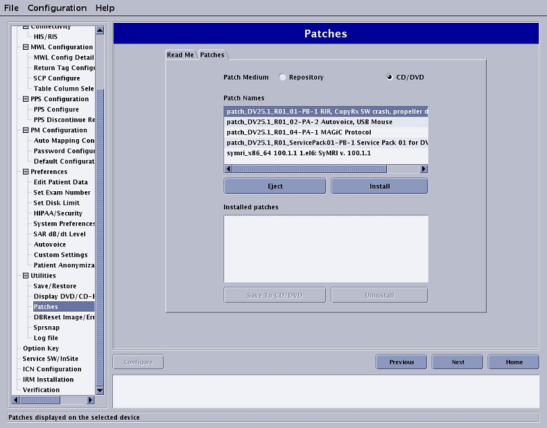

Access the patches that are available on the system disk, CD/DVD, and host computer.
About this task
Note: Updates should not be loaded with application software running.
Procedure
- To access patches, expand Utilities, click Patches, and select the Patches tab.
Figure 1. Guided Install patches
- Open the “Read Me” file to identify any special procedures that need to be completed in order to install the service pack.
Note: It may be necessary to cycle through the selections to update the "Read Me" instructions.
- Review and select the following items as needed.
- Review the Installed Patches section to identify the updates that have been loaded on the system disk.
- Click CD/DVD to find the updates that are on the CD/DVD.
- Click Repository to find the updates that have been downloaded to the host computer and saved in /usr/g/insite/data via InSite.
- Select Patch Information to view available help files on the system, CD/DVD, or in the /usr/g/insite/data directory.